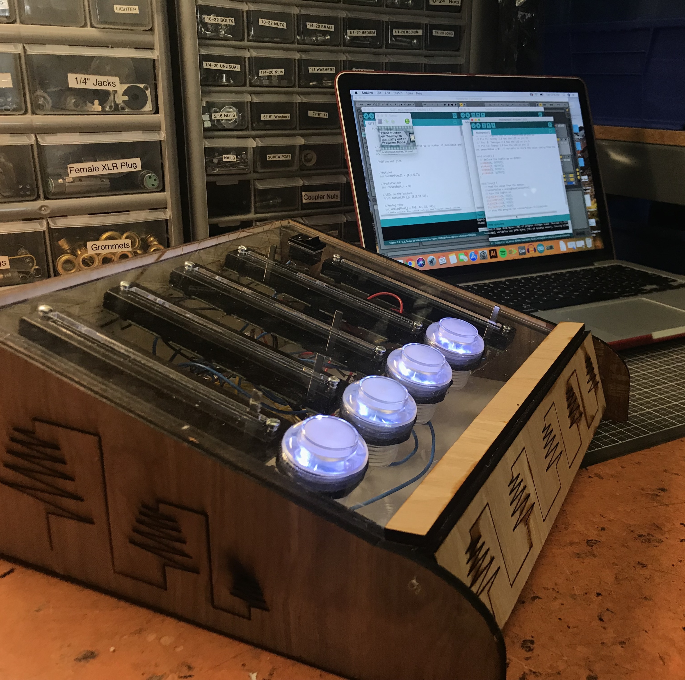
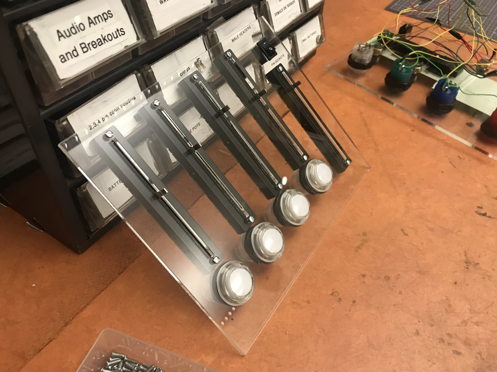
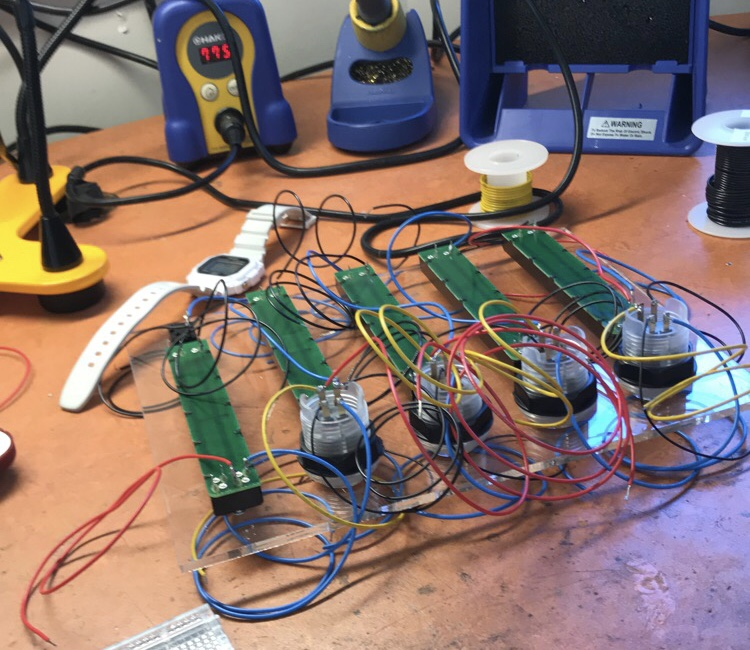

TwigMix
Current Iteration Built:
January, 2018
TwigMix is a simple MIDI mixer with 5 Faders, 4 illuminated buttons, and a switch for mapping the sliders to different virtual parameters. This project was a chance for me to explore the process of MIDI design, and the variety of hurdles I made it past set me up well to continue working on future designs.
The brains of the operation are a Teensy 3.2, given a micro-usb access port on the back. The Teensy reads the analog values of the faders to provide a MIDI output value to whatever the user has connected it to. The buttons work the same way, and provide a chance for the user to toggle the various effects and tracks the sliders are hooked up to.
 